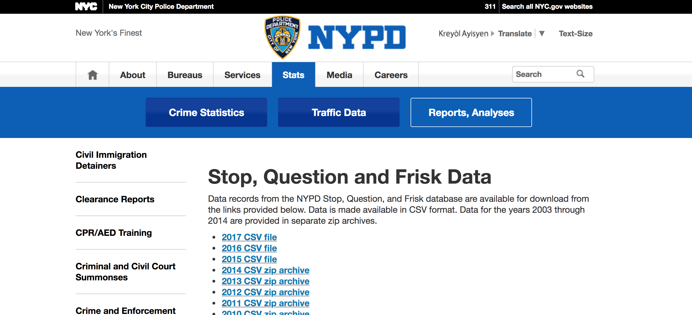

Investigating Stop and Frisk¶
GOALS:
- Access datasets as external files
- Create
DataFramefrom file - Select rows and columns from the
DataFrame - Filter values in
DataFramebased on logical conditions - Split, Apply, Combine using
groupbymethod - Use histograms, boxplots, barplots, and countplots to investigate distributions of quantitative variables
- Use
.corr()to explore relationships between variables and visualize withheatmap - Use scatterplots to examine relationships between quantitative variables
The Stop and Frisk Data¶
To start, we want to create a DataFrame from our .csv file we
downloaded from the NYPD shared data.

In [1]:
%matplotlib inline
import matplotlib.pyplot as plt
import pandas as pd
import numpy as np
import seaborn as sns
In [2]:
#read in the data
df = pd.read_csv('../data/sqf-2017.csv')
In [3]:
#look at first five rows
df.head()
Out[3]:
| STOP_FRISK_ID | STOP_FRISK_DATE | STOP_FRISK_TIME | YEAR2 | MONTH2 | DAY2 | STOP_WAS_INITIATED | SPRINT_NUMBER | RECORD_STATUS_CODE | ISSUING_OFFICER_RANK | ... | STOP_LOCATION_SECTOR_CODE | STOP_LOCATION_APARTMENT | STOP_LOCATION_FULL_ADDRESS | STOP_LOCATION_PREMISES_NAME | STOP_LOCATION_STREET_NAME | STOP_LOCATION_X | STOP_LOCATION_Y | STOP_LOCATION_ZIP_CODE | STOP_LOCATION_PATROL_BORO_NAME | STOP_LOCATION_BORO_NAME | |
|---|---|---|---|---|---|---|---|---|---|---|---|---|---|---|---|---|---|---|---|---|---|
| 0 | 1 | 1/16/2017 | 14:26:00 | 2017 | January | Monday | Based on Self Initiated | 11617924 | APP | SGT | ... | (null) | (null) | 180 GREENWICH STREET | (null) | GREENWICH STREET | 982381 | 201750 | (null) | PBMS | MANHATTAN |
| 1 | 2 | 1/16/2017 | 14:26:00 | 2017 | January | Monday | Based on Self Initiated | 11617924 | APP | SGT | ... | (null) | (null) | 180 GREENWICH STREET | (null) | GREENWICH STREET | 982381 | 201750 | (null) | PBMS | MANHATTAN |
| 2 | 3 | 2/8/2017 | 11:10:00 | 2017 | February | Wednesday | Based on C/W on Scene | 17020808555 | APP | POM | ... | C | (null) | WALL STREET && BROADWAY | (null) | WALL STREET | 981005 | 197131 | (null) | PBMS | MANHATTAN |
| 3 | 4 | 2/20/2017 | 11:35:00 | 2017 | February | Monday | Based on Self Initiated | 9027 | APP | POM | ... | H | (null) | 75 GREENE STREET | (null) | GREENE STREET | 984031 | 202796 | (null) | PBMS | MANHATTAN |
| 4 | 5 | 2/21/2017 | 13:20:00 | 2017 | February | Tuesday | Based on Radio Run | 10439 | APP | POM | ... | H | 2 | 429 WEST BROADWAY | (null) | WEST BROADWAY | 983894 | 203523 | (null) | PBMS | MANHATTAN |
5 rows × 86 columns
In [4]:
#examine variables and variable types
df.info()
<class 'pandas.core.frame.DataFrame'>
RangeIndex: 11629 entries, 0 to 11628
Data columns (total 86 columns):
STOP_FRISK_ID 11629 non-null int64
STOP_FRISK_DATE 11629 non-null object
STOP_FRISK_TIME 11624 non-null object
YEAR2 11629 non-null int64
MONTH2 11629 non-null object
DAY2 11629 non-null object
STOP_WAS_INITIATED 11629 non-null object
SPRINT_NUMBER 11202 non-null object
RECORD_STATUS_CODE 11629 non-null object
ISSUING_OFFICER_RANK 11629 non-null object
ISSUING_OFFICER_COMMAND_CODE 11629 non-null int64
SUPERVISING_OFFICER_RANK 11629 non-null object
SUPERVISING_OFFICER_COMMAND_CODE 11629 non-null int64
SUPERVISING_ACTION_CORRESPONDING_ACTIVITY_LOG_ENTRY_REVIEWED 11629 non-null object
LOCATION_IN_OUT_CODE 11629 non-null object
JURISDICTION_CODE 11629 non-null object
JURISDICTION_DESCRIPTION 11629 non-null object
OBSERVED_DURATION_MINUTES 11629 non-null int64
SUSPECTED_CRIME_DESCRIPTION 11629 non-null object
STOP_DURATION_MINUTES 11629 non-null int64
OFFICER_EXPLAINED_STOP_FLAG 11629 non-null object
OFFICER_NOT_EXPLAINED_STOP_DESCRIPTION 11628 non-null object
OTHER_PERSON_STOPPED_FLAG 11629 non-null object
SUSPECT_ARRESTED_FLAG 11629 non-null object
SUSPECT_ARREST_NUMBER 11629 non-null object
SUSPECT_ARREST_OFFENSE 11629 non-null object
SUMMONS_ISSUED_FLAG 11629 non-null object
SUMMONS_NUMBER 11629 non-null object
SUMMONS_OFFENSE_DESCRIPTION 11629 non-null object
OFFICER_IN_UNIFORM_FLAG 11629 non-null object
ID_CARD_IDENTIFIES_OFFICER_FLAG 11629 non-null object
SHIELD_IDENTIFIES_OFFICER_FLAG 11629 non-null object
VERBAL_IDENTIFIES_OFFICER_FLAG 11629 non-null object
FRISKED_FLAG 11629 non-null object
SEARCHED_FLAG 11629 non-null object
OTHER_CONTRABAND_FLAG 11629 non-null object
FIREARM_FLAG 11629 non-null object
KNIFE_CUTTER_FLAG 11629 non-null object
OTHER_WEAPON_FLAG 11629 non-null object
WEAPON_FOUND_FLAG 11629 non-null object
PHYSICAL_FORCE_CEW_FLAG 11629 non-null object
PHYSICAL_FORCE_DRAW_POINT_FIREARM_FLAG 11629 non-null object
PHYSICAL_FORCE_HANDCUFF_SUSPECT_FLAG 11629 non-null object
PHYSICAL_FORCE_OC_SPRAY_USED_FLAG 11629 non-null object
PHYSICAL_FORCE_OTHER_FLAG 11629 non-null object
PHYSICAL_FORCE_RESTRAINT_USED_FLAG 11629 non-null object
PHYSICAL_FORCE_VERBAL_INSTRUCTION_FLAG 11629 non-null object
PHYSICAL_FORCE_WEAPON_IMPACT_FLAG 11629 non-null object
BACKROUND_CIRCUMSTANCES_VIOLENT_CRIME_FLAG 11629 non-null object
BACKROUND_CIRCUMSTANCES_SUSPECT_KNOWN_TO_CARRY_WEAPON_FLAG 11629 non-null object
SUSPECTS_ACTIONS_CASING_FLAG 11629 non-null object
SUSPECTS_ACTIONS_CONCEALED_POSSESSION_WEAPON_FLAG 11629 non-null object
SUSPECTS_ACTIONS_DECRIPTION_FLAG 11629 non-null object
SUSPECTS_ACTIONS_DRUG_TRANSACTIONS_FLAG 11629 non-null object
SUSPECTS_ACTIONS_IDENTIFY_CRIME_PATTERN_FLAG 11629 non-null object
SUSPECTS_ACTIONS_LOOKOUT_FLAG 11629 non-null object
SUSPECTS_ACTIONS_OTHER_FLAG 11629 non-null object
SUSPECTS_ACTIONS_PROXIMITY_TO_SCENE_FLAG 11629 non-null object
SEARCH_BASIS_ADMISSION_FLAG 11629 non-null object
SEARCH_BASIS_CONSENT_FLAG 11629 non-null object
SEARCH_BASIS_HARD_OBJECT_FLAG 11629 non-null object
SEARCH_BASIS_INCIDENTAL_TO_ARREST_FLAG 11629 non-null object
SEARCH_BASIS_OTHER_FLAG 11629 non-null object
SEARCH_BASIS_OUTLINE_FLAG 11629 non-null object
DEMEANOR_CODE 11629 non-null object
DEMEANOR_OF_PERSON_STOPPED 11588 non-null object
SUSPECT_REPORTED_AGE 11629 non-null object
SUSPECT_SEX 11629 non-null object
SUSPECT_RACE_DESCRIPTION 11629 non-null object
SUSPECT_HEIGHT 11629 non-null object
SUSPECT_WEIGHT 11629 non-null object
SUSPECT_BODY_BUILD_TYPE 11629 non-null object
SUSPECT_EYE_COLOR 11629 non-null object
SUSPECT_HAIR_COLOR 11629 non-null object
SUSPECT_OTHER_DESCRIPTION 10607 non-null object
STOP_LOCATION_PRECINCT 11629 non-null object
STOP_LOCATION_SECTOR_CODE 11629 non-null object
STOP_LOCATION_APARTMENT 11604 non-null object
STOP_LOCATION_FULL_ADDRESS 11629 non-null object
STOP_LOCATION_PREMISES_NAME 11629 non-null object
STOP_LOCATION_STREET_NAME 11629 non-null object
STOP_LOCATION_X 11629 non-null object
STOP_LOCATION_Y 11629 non-null object
STOP_LOCATION_ZIP_CODE 11629 non-null object
STOP_LOCATION_PATROL_BORO_NAME 11629 non-null object
STOP_LOCATION_BORO_NAME 11629 non-null object
dtypes: int64(6), object(80)
memory usage: 7.6+ MB
In [5]:
#examine distribution
df.OBSERVED_DURATION_MINUTES.hist()
Out[5]:
<matplotlib.axes._subplots.AxesSubplot at 0x117e742b0>
In [6]:
df.OBSERVED_DURATION_MINUTES.mean()
Out[6]:
28.94083756126924
In [7]:
df.OBSERVED_DURATION_MINUTES.describe()
Out[7]:
count 11629.000000
mean 28.940838
std 975.822879
min 0.000000
25% 1.000000
50% 1.000000
75% 2.000000
max 99999.000000
Name: OBSERVED_DURATION_MINUTES, dtype: float64
In [8]:
df.SUSPECT_RACE_DESCRIPTION.value_counts()
Out[8]:
BLACK 6595
WHITE HISPANIC 2570
BLACK HISPANIC 997
WHITE 977
(null) 268
ASIAN/PAC.ISL 206
AMER IND 9
MALE 7
Name: SUSPECT_RACE_DESCRIPTION, dtype: int64
In [ ]:
In [ ]:
In [ ]:
In [ ]:
In [ ]:
In [ ]:
In [ ]:
In [ ]:
In [ ]:
In [ ]:
In [ ]:
In [ ]: